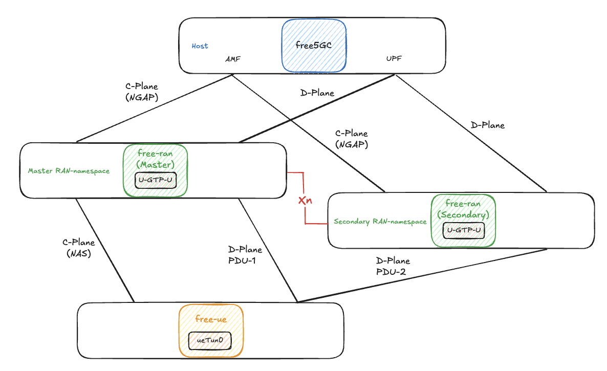
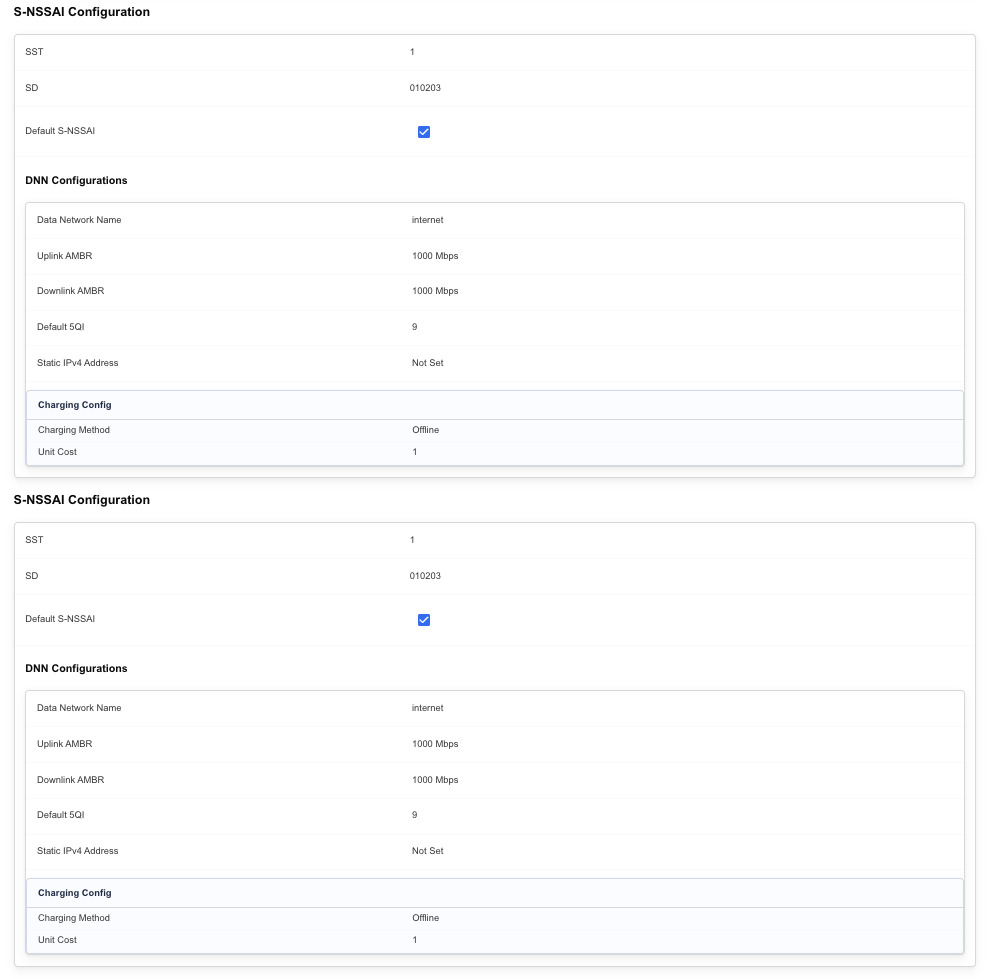

Project 3 - NR Dual Connection
Deadline：2026/12/7
描述
你是一名出色的 5G R&D，秉持著只要講得出來就能做的出來的原則，主管將此次雙 PDU session 模擬器的任務交給了你。
目前市面上幾乎沒有可以支援雙 PDU sessin 的 UE，因此主管需要你透過爆改 free-ran-ue 的方式來提供核網做測試。同時還需要建立可以將第二個 PDU session 放到第二個 RAN 上的模擬。

學習目標
- 理解 PDU 的建立操作
- 將 5G 網路的知識進行實踐開發
- 學習使用 tcpdump 與 wireshark 進行 icmp 封包解析
- 理解一份開源專案並學習如何修改
- 培養講得出來就做的出來的精神
目標任務
- 前往 pj3-dc 做 fork 與 clone
- 開啟 Github Action，確認 workflow 可以在每一次 commit 正常運作
- 完成所有 TODO，裡面有注意事項與 hint，請認真查看喔～
- 使用提供的測試腳本進行本地測試，可以確保你是否可以拿到 80%
- 完成 Report 撰寫
評分
- （0%）Code Check -
make build/make test/make lint/make image- 這邊沒過就沒了
- （60%）雙 PDU session 在同一個 RAN 上建立
- 這邊失敗就不會繼續執行評分。
- （20%）第一條 PDU 在 master RAN 上，第二條 PDU 在 second RAN 上
- 這邊失敗 Report 部分只會進行上一部分的 report 評分。
- （20%）Report.md 繳交
- （5%）敘述雙 PDU session 建立方式
- （5%）雙 PDU session 建立成功證明，包含 upf 與 ue 的 pcap 截圖
- （5%）敘述雙 PDU session 做 DC 的建立方式
- （5%）雙 PDU session 做 DC 建立成功證明，包含 upf 與 ue 的 pcap 截圖
測試資訊
測試與評分使用一樣的 code，但是助教測試方式是複製你們 free-ran-ue 的 code 做編譯，不會直接執行你們的整個資料夾（避免有人直接改測試）
測試內容分為三個部分：
- 確認 code 可以執行
make build/make test/make lint/make image - 在 dc 設定為 false 的情況下對同一個 RAN 建立兩個 PDU session，並進行 ICMP 測試，確認 UPF 收到的封包來源正確
- 在 dc 設定為 true 的情況下對兩個個 RAN 建立兩個 PDU session，並進行 ICMP 測試，確認 UPF 收到的封包來源正確
測試腳本完全公開，可自行查看。
free5GC 端的 subscriber 請使用 default 值，然後刪掉第二個 slice（112233），手動新增一個 010203 的 slice，flow rule 可刪可不刪，json 檔案請參考：free5gc-console-subscriber-data.json，UI 參考如下：

繳交內容
一份 zip 檔案，壓縮檔中需要包含 Report.md 與截圖（如果 md 裡面有放的話），Report.md 格式不限，但需清楚描述與呈現實作方法與結果，且要讓助教看得懂（內容請參考“評分”），同時請命名為：
Important
- 無需繳交程式碼，Report 裡面會需要你們放 github 連接，助教會去 clone，沒有放 link 或是 link 錯誤直接 0 分
- 格式錯誤，造成助教的困擾 -10%（不接受任何理由）
- MacOS 系統請注意壓縮後的層級問題（MacOS 好像會多一層？）
提問
請直接在 pj3-dc 的 repo issue 頁面 發起一個 issue，描述問題，如果一段時間沒有回你可以直接 at 助教（助教的 github：@d11nn）
如果是隱私一點的問題請使用 e3 寄信，非 e3 信件助教可以不回